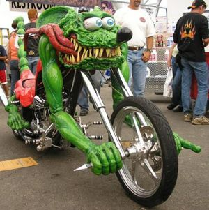
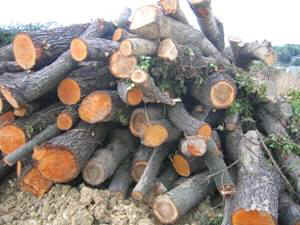

Qhuosednhia
 De: La Frikipedia, la enciclopedia extremadamente seria.
De: La Frikipedia, la enciclopedia extremadamente seria.
| De la serie Países del planeta tierra:
|
| Qhuosednhia
|
|
| Lema: Hshjerd fgads mrso
|
Himno: Dadhguasg audat yawmjo puoybv
|
|
Tampoco de mapa
|
| Capital
|
Mfasdgyirn
|
| Mayor ciudad
|
Mierdapolis
|
| Lenguas oficiales
|
Qhuosednhiano
|
| Gobierno
|
Gobierno No gubernamental
|
| Rakksruta
|
Mnbvcxzñlkjhgfdsa
|
| Área
|
976,888888 km cuadrados
|
| Población
|
{{{estimación_población}}}
|
| Moneda
|
Pqoweirtuy
|
| Zona horaria
|
GTM +FJ
|
| Dominio Internet
|
.ppaifhaeaaivuauevash
|
| Código telefónico
|
96845241414
|
| En qhuosednhiano, mierda significa "guay". Y "guay" significa mierda.
|
Qhuosednhia (del Gysrnafio Wosdnha y este del Yshrskaiano Kustadni y este del Hqsndañcés Daskutni, que viene del Rhjsdfés "Das-aski-to") es un país del sureste de Europa Sur-Sureste-Sursureste. No les gusta dar mucha información, por eso las imágenes no pintan nada.
Este país nació el año 1.000.000.000.000.000.000.000.000.000 aC con una forma de escritura con sólo 63 letras. Luego se modificaron a 64.
Escritura
Y el qhuosednhiano se escribe así:
- 1. Tener una/dos man(o)s.
- 2. El papelito (u otro medio de escritura)
- 3. El boli de oferta.
- 4. El dinerón (mucho dinero).
Bueno, dejando las tonterias, el qhuosednhiano tiene las siguientes letras: A, B, C, D, E, F, G, H, I, J, K, L, M, N, Ñ, O, P, Q, R, S, T, U, V, W, X, Y, Z, Ç, Γ, Δ, Θ, Λ, Ξ, Π, Σ, Φ, Ψ, Ω, α, β, γ, δ, ε, ζ, η, θ, ι, κ, λ, μ, ν, ξ, ο, π, ρ, ς, σ, τ, υ, φ, χ, ψ, y ω.
Verbos

Rodolfo no se sabe los verbos en qhuosednhiano y por eso se ha puesto histérico.
Son unos verbos sencillísimos de aprender. Observad como es el verbo METAFUSIONAR en qhuodsednhiano:
- Un verbo terminado en -AR, el verbo METAFUSIONAR:
Strafuhutruck: Frizztasdkjhgfdsa:
- Yfjui Fgiadbuavbai
- Rsgshi Joihaobgoyg
- El/ Oadbh Slikanpñaç
- Nstrosow Lοπρςστυφddas
- Vstrogix Xyympklu
- Ogrji/ Ellas Flonaigiq
- Ahora, un verbo terminado en -ER, el verbo ABSTENER:
Vghsdral: Prerhugirer:
- Yfjui Woimejodor
- Rsgshi Extashodit
- El/ Oadbh Laakagxau
- Nstrosow Gaπρςστυφhip
- Vstrogix Suxfodies
- Ogrji/Ellas Fñejodsens
- Y ahora, uno terminado en -IR. El verbo SEÑIR:
Vghsdral: Drhosfalodoir:
- Yfjui Suñgeldfs
- Rsgshi Durggmett
- El/ Oadbh Audurmix
- Nstrosow Nodhggjlis
- Vstrogix Gfaxx
- Ogrji/ Ellas Cshinerg
¿Has visto que fáciles que son?
Cultura
Los qhuosednhianos tienen una cultura Nom´he-gust-tál-oque-mo. Es decir, que si no les gusta algo lo queman. Interesante sistema.
 Transporte que usan los qhuosednhianos cuando viajan al extranjero. Allí puedes conducir desde los 0,0000001 años.
Leyes
 La madera de Kosovo es la única que pueden comprar los qhuosednhianos.
Esto es una diezmilésima parte de la liste de leyes que tiene Qhuosednhia:
- Prohibido matar a alguien si conlleva a joder a su suegro/a.
- Prohibido beber alcohol siendo menor de 0,000000000000001 años.
- Prohibido bailar una sevillana sin quitarse antes el ombligo.
- Prohibido hacer fotos o guardar imágenes de Qhuosednhia.
- Toda cámara de fotos o de vídeo será quemada cuando entre en este país.
- Prohibido volar como Superman. Eso solo lo hace el Presidente.
- Prohibido morir sin el consentimiento de diez asesinos mortales.
- Prohibido hacer un funeral a la mierda de tu perro/a (literalmente).
- Ídem de lo mismo con tu gato/a.
- Prohibido usar cualquier moneda que no sea el Pqoweirtuy.
- Prohibido no seguir estas prohibiciones al pie de la letra.
- Estas obligado a trabajar como un esclavo, 27 horas al día, hasta que tengas (como mínimo) 156 años.
- Estas obligado a tener un/a perro/a o un/a gato/a que haga mierdas.
- Estas obligado a seguir todas estas leyes al pie de la letra.
- Estas obligado a matarte cuando tengas 155 años, aunque no tengas el permiso de diez asesinos mortales.
- Estas obligado a criar a un elefante que luego le regalarás al presidente.
- Estas obligado a usar unicamente el Pqoweirtuy, la moneda de curso legal Qhuosednhia.
- Estas obligado a comprar unicamente madera de Kosovo.
- Puedes casarte con tu gato.
- Puedes casarte con tu váter.
- Tus hijos serán llamados "Alegría".
- Sí hay alguien que no se llame Alegría, debe suicidarse en menos de 24 segundos.
- Sí el presidente de Qhuosednhia no se llama Alegría, los que deverán suicidarse serán todos los habitantes del país. Esto ya pasó en 1914 y 1936 (por eso no han participado en ninguna guerra mundial).
- Cualquier persona no nativa en Qhuosednhia que no se llame Alegría, deberá ser matada en menos de lo que canta un Gohlefry.
- Cualquier persona que no use el sistema de numeración qhuosednhiana (1, 2, 3, 4, 5, 6, 7, 9, 8...) morirá de inmediato por un rayo láser lanzado desde el satélite qhuosednhiano XXX-LEY.
- La única canción que se puede escuchar en Qhuosednhia aparte del himno nacional es Jesucristo Superstar.
- Solo puedes usar tughjakkal sí el gdrerhserwqe de tu vecino esta aprobado por el gobierno de otro modo tu y tu ghdassauzwertqi serán encarcelados y torturados cruelmente y en secreto.
Por si vas allí
Que sepas que el hotel más lujoso es de 1 estrella y un cuarto. Y que te cobran 13964234,754 leros (20 Pqoweirtuys) por noche. Pero a parte de ello. Para comunicarte con ellos aquí tienes un minidiccionario de palabras:
- Guay: Mierda
- Mierda: Guay
- Paraguas: PhisΠΡΣΤΥΦ
- Verbo: Vghsdral
- Vete a la mierda: Gwurggmett pjaosh hiwnasec guay
- Adiós: Hola
- Hola: Joder
- Joder: Izquierda
- Izquierda: Derecha
- Derecha: Centro
- Centro: Yokueshepr
- Vida: Horrox
- Horroroso: baratha
- País: Merca
- Alegría: Horror increíblemente desagradable y malvado para el desarrollo mundial.
- Gilipollas: Gisdrauo yufyuwafeiu ivytaduvfbi llasponw
- Gay: Sora
- Me cago en tu puta madre:Mla vash a komer casho kcAni
En definitiva
Qhuosednhia es un país horroroso (Merca baratha, en qhuosednhiano), en el que todo el mundo se llama Alegría, al que te deseo suerte si vas a ir, porque solo un 0,00000000000000000000000000000000000006% de la gente que va allí vuelve y cuya ubicación del territorio debe mantenerse en secreto así que sólo podemos decir que esta ubicado al sur-sureste del este sur en direccion al oeste del meridiano guiado por los vientos de Europa,limitando con hungria,el Polo Norte,Nigeria,Tailandia y el pais de las Maravillas.
Importancia en tu vida
Absoluta. Quien sea que no conozca esta gran nacion es que no tiene vida. Aqui todo el mundo es super guay y listo que te cagas. Hablan todos los idiomas y son la hostia. Si no vienes a este pais en tu bida iras al infierno.
Autor(es):
- Roms
- Azulejos
- Yodela
- Dark temptation
- Nick X
- Luisito pistola
- Joaxin
- Last carws
- Mate9
- M386
Frikipedia 2005-2016, Licencia
GFDL 1.2 - Extraído por FrikiLeaks

 Imperios de Europa
Imperios de Europa